Chapter 4 Results
4.1 Part 1: Remote Learning Preferences for Different Districts
4.1.1 Overview:
In this section, we will explore remote learning preferences using three methods: a heat map plot from JSON, a histogram, and a Cleveland dot plot. Our goal is to show the overall distribution of remote learning preferences in districts.
4.1.2 Heatmap Plot from JSON
In this graph, we can see the remote learning preference for each county. As shown in the legend on the right, we can observe each cell’s value of the main variable in the corresponding cell range. Darker colors indicate a higher preference for remote learning.
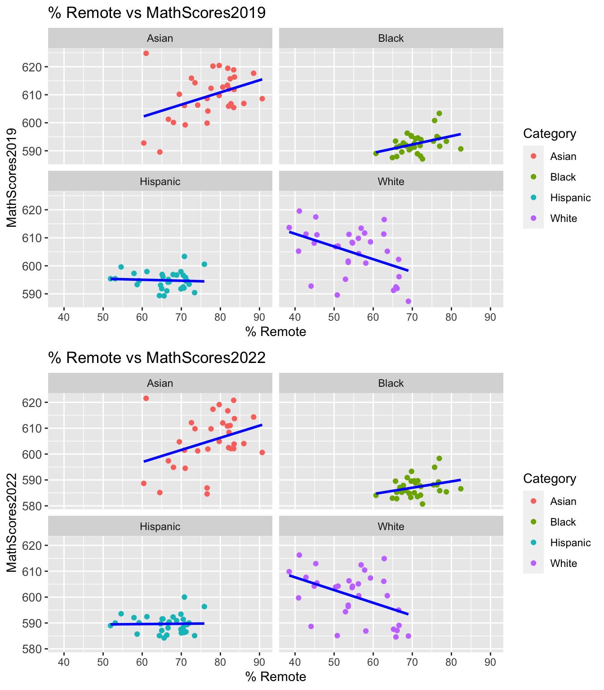
4.1.3 Bar Plot of Remote Learning Preferences
The histogram displays the overall distribution of the percentage of remote learning preference. We divided the data into bins of 2.5% increments. The height of each bar represents the number of districts that fall within that range. The shape of the histogram is slightly left-skewed. Most scores fall in the bin between 70-72.5%.
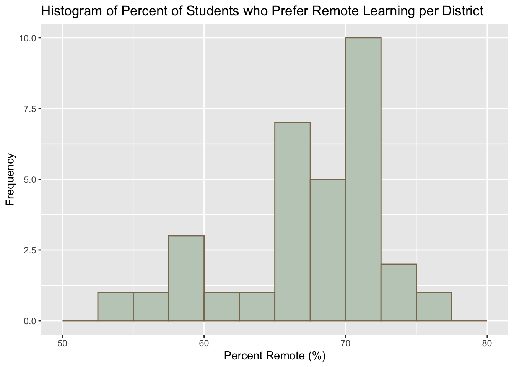
4.1.4 Cleveland Dot Plot of Remote Learning Preferences Per District (Order by Highest to Lowest)
The Cleveland dot plot allows us to see the remote learning preference of each district and the overall trends between districts. We ordered the districts by their preference from the highest to the lowest. This allows us to easily compare the preferences of different districts.
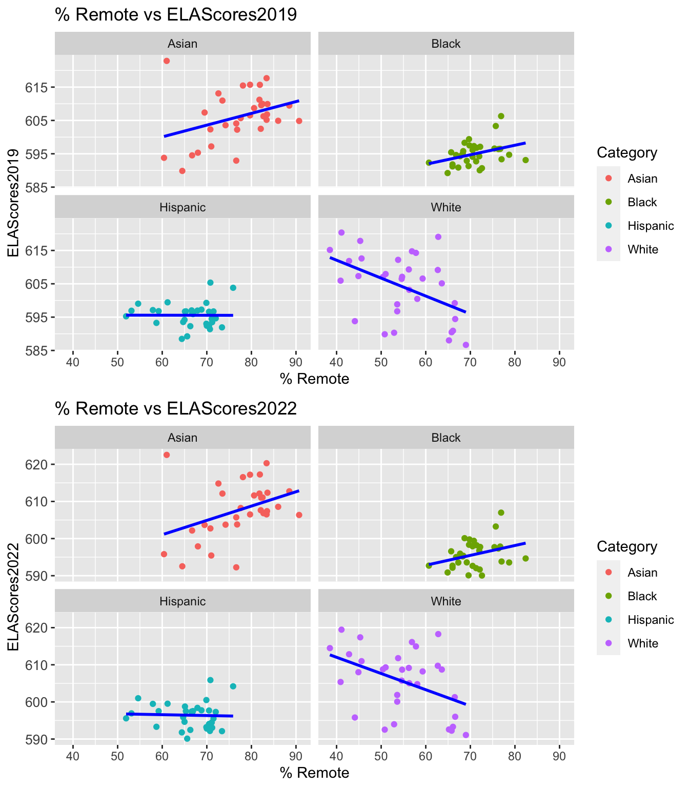
4.2 Part 2: Remote Learning Preferences Analysis by Subgroups
4.2.1 Overview:
After analyzing the overall data, we want to look at four subgroups (grade level, gender, English language learners (ELL), ethnicity) to determine which indicator has the strongest impact on preference for remote learning.
4.2.2 Gender
The Cleveland dot plot shows the remote learning preference of different genders in each district. The blue dots represent the preference of males and the red dots represent the preference of females. For most districts, females have a stronger preference for remote learning. We highlighted the difference between males and females for each district by connecting the dots for each gender. 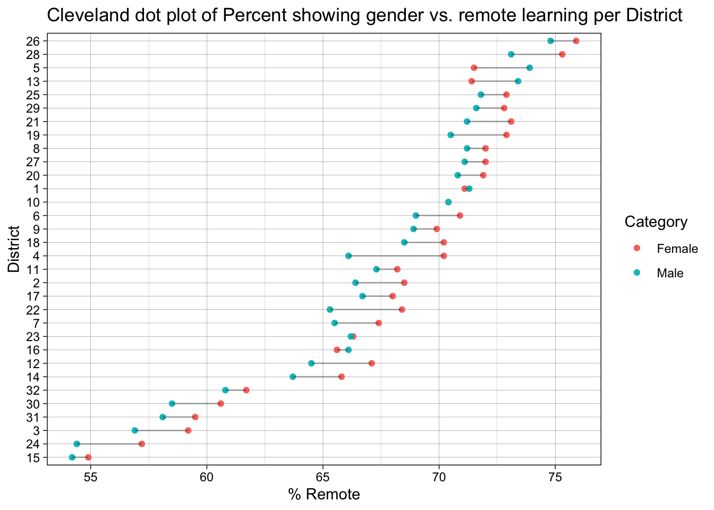
4.2.3 English Language Learner Status
The Cleveland dot plot shows the remote learning preference of different English language learner (ELL) statuses in each district. The blue dots represent the preference of English language learners and the red dots represent the preference of non-English language learners. We observe a significantly stronger preference for remote learning among non-English language learners. We highlighted the difference between ELL and non-ELL students for each district by connecting the dots for each group. We will further analyze this factor in the following section.
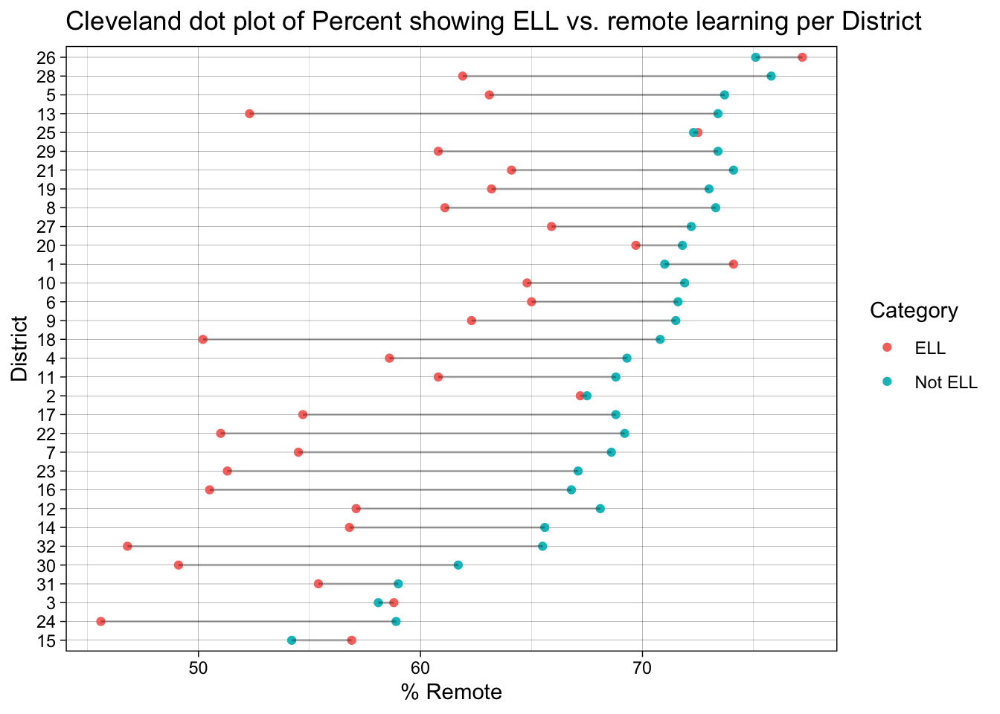
4.2.4 Race/Ethnicity
This plot shows the remote learning preference for different races or ethnicities in each district. The Cleveland dot plot allows us to easily compare the preferences of different races or ethnicities within each district. According to the graph, the category Asian (red dots) have the highest preference for remote learning, while category White(purple dots) have the lowest willingness to do school remotely. Category Black (green dots) have a slightly stronger inclination towards remote learning compared to category Hispanic (blue dots). We will further analyze this factor in the following section.
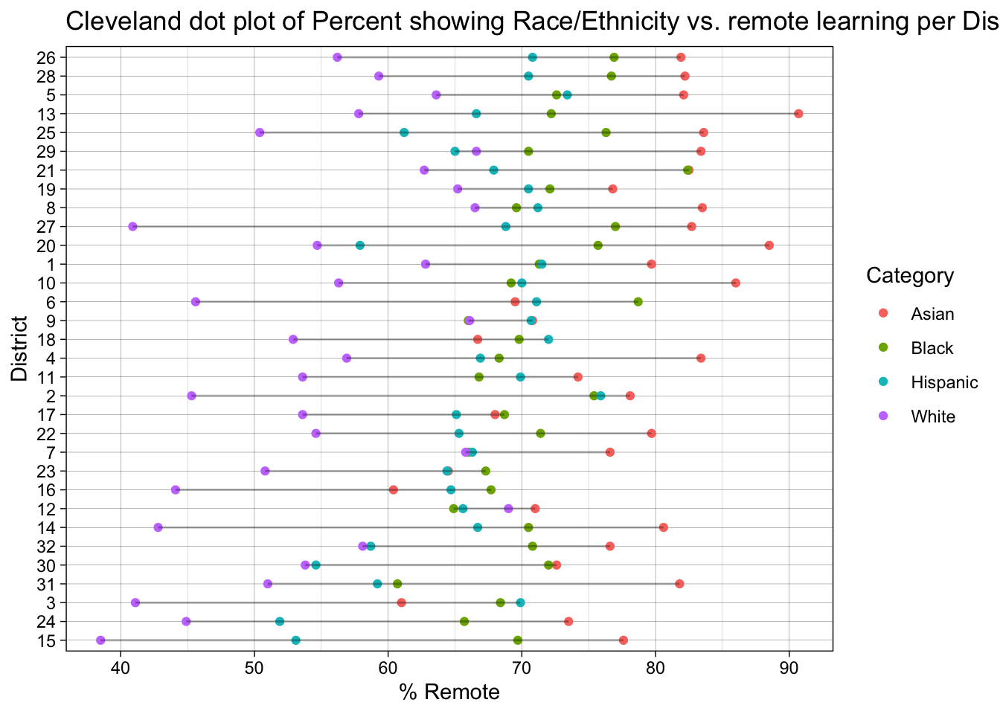
This is another Cleveland dot plot of the percentage of remote learning preference, but with facets showing different races or ethnicities. Unlike the previous graph, this plot allows us to see the distribution of preference for each race or ethnicity in each district. We ordered the plots from the highest to the lowest preference. The dot plot helps to reduce clutter and focus attention on the single values representing the total preferences for each race or ethnicity.
4.2.5 Grade Level
This plot shows the remote learning preference for different grade levels in each district. The Cleveland dot plot allows us to easily compare the preferences of different grades within each district. We do not observe a strong pattern of change in preferences across grades.
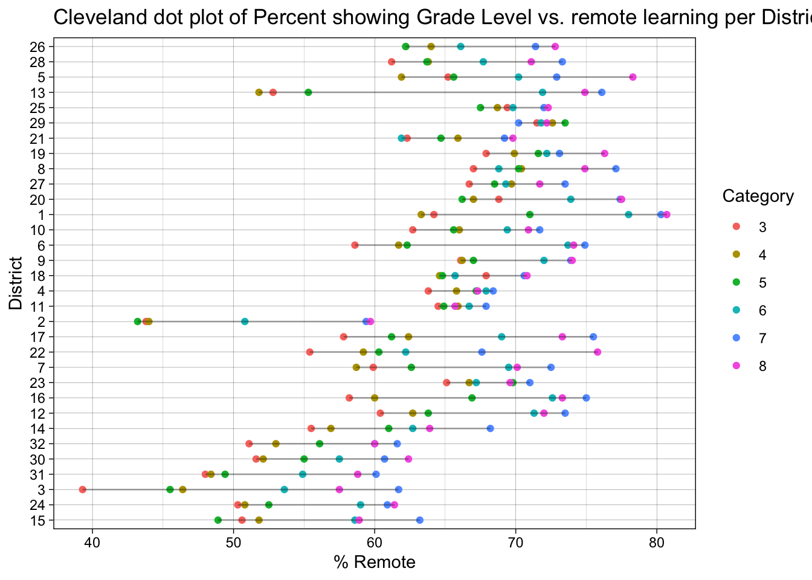
Cleveland dot plot of the percentage of remote learning preference with facets showing all grade levels.
4.3 Part 3: Detailed Analysis for ELL Subgroup and Race/Ethnicity Subgroup
4.3.1 Overview:
From the previous section, we found that people’s preferences change substantially across ELL status and race/ethnicity groups. In this next section, we will take a deeper look at the correlation between the proportion of certain groups, if it exists.
4.3.2 ELL Proportion vs Remote Learning Preferences
As shown in the graph, the percentage of English language learners (ELL) in each district is quite scattered. We fit the data to a linear model and do not see a strong correlation between the ELL proportion and preferences for remote learning.
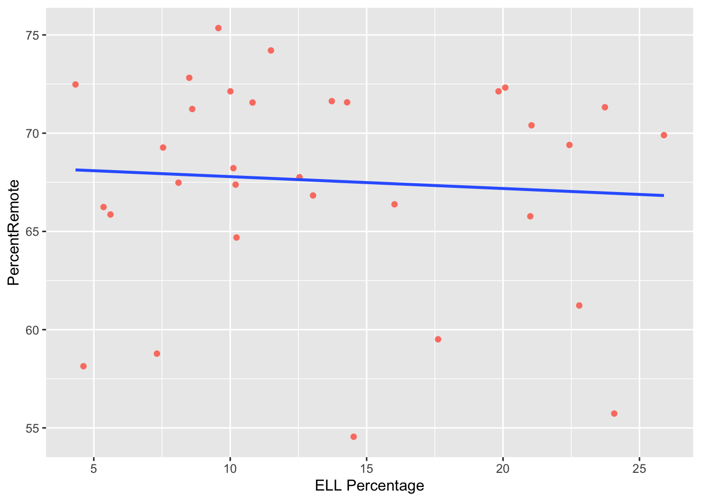
4.3.3 Race/Ethnicity Proportion vs Remote Learning Preferences
There is a slightly positive correlation between the Asian proportion and remote learning preference percentage (the higher the Asian proportion, the higher the remote learning preference), and a slightly negative correlation between the White proportion and remote learning preference percentage. We do not notice any major correlation between the remote learning preference and the proportions of Hispanic and Black groups.
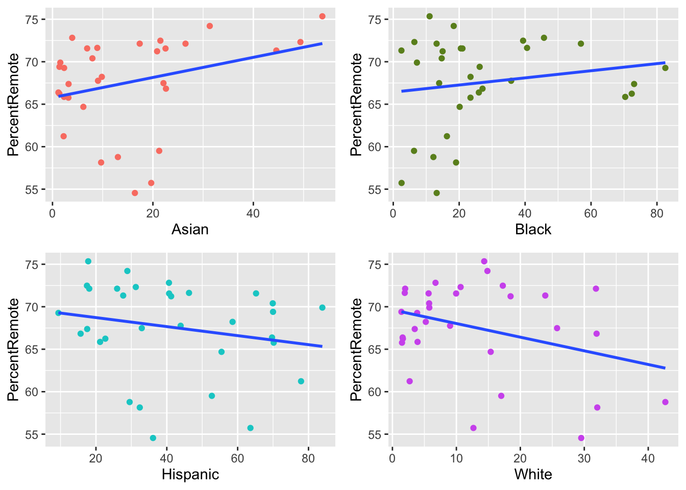
4.4 Part 4: Math and ELA Scores for Different Districts
4.4.1 Overview:
We want to observe the trend of how the average preference of different groups changes from 2019-2022. In data.Rmd we separated preferences into three groups: low (lowest 20%), middle (25%-75%), and high (top 25%). ### Parallel coordinates plot To illustrate the changes in test scores from 2019 to 2022, we created a parallel coordinate plot and grouped the scores by each district’s average preference for remote learning. The plot provides insight into students’ performance prior to the pandemic when exams were administered in person, and after the pandemic when exams were administered virtually. By examining each district’s average preference for remote learning in relation to their test scores, we can determine if remote learning preference had an impact on test performance for math and English language arts (ELA).
According to the parallel coordinates plot, districts on average improved their ELA test scores from 2019 to 2022 but their performance declined for math tests. However, these relationships were not affected by the districts’ preference for remote learning. Districts that did not prefer remote learning had scores clustered towards the upper middle range, but the trend of improving ELA scores and declining math scores was consistent across districts regardless of their preference for remote learning.
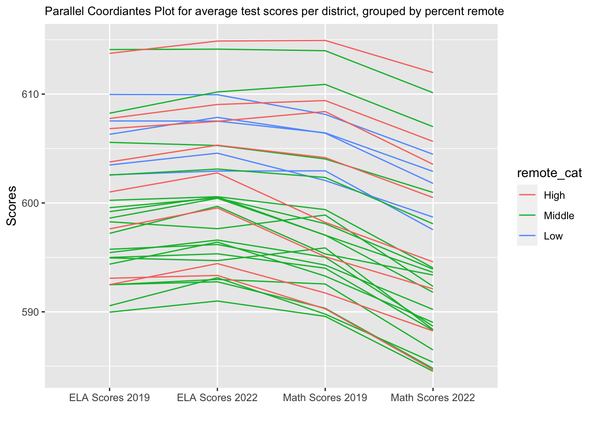
4.5 Part 5: Math and ELA Scores by Subgroups
4.5.1 Overview:
In order to compare test scores and remote learning preferences between different demographics, we created a series of boxplots.
4.5.2 Gender
There does not seem to be a significant difference in the change in test scores between males and females from 2019 to 2022. However, students with a medium preference for remote learning performed worse on average across all groups.

4.5.3 English Language Learner
Students who are not English language learners had a higher average preference for remote learning than students who were. However, ELL students who had a high preference for remote learning tended to outperform non-ELL students. ELL students who did not prefer remote learning had lower test scores. There was no significant difference between pre-pandemic and post-pandemic test scores for ELL students.

4.5.4 Race/Ethnicity
Students whose race was “Asian” and who had high preference for remote learning performed significantly better across all groups. Their median ELA scores improved from 2019 to 2022 and declined from 2019 to 2022, which is consistent with the results from the parallel coordinates plot in Part 4. Throughout all test scores there exists a large outlier for the students who had medium preference. Students whose race was “White” did not have any high remote learning preferences, but those who had low remote learning preferences outperformed the students with medium preferences. Students whose race was “Black” did not have many low remote learning preferences, but the students who had high preferences outperformed the others.

4.5.5 Grade Level
For grades 3-8, on average students who did not prefer remote learning as much tended to outperform on math and ELA tests compared to the ones who did (with the exception of 8th graders’ 2022 math scores). 3rd graders did not have high preference for remote learning in general, and 4th and 5th grader had very few students with high preference for remote learning.
4.6 Part 6: Detailed Analysis for ELL Subgroup and Race/Ethnicity Subgroup
4.6.1 Overview:
In this section, we aim to find the correlations between test scores and remote learning preference. We made the plots with facets by two major indicators (ELL and Race/Ethnicity).
4.6.2 ELL Remote Learning Preferences vs. Scores
We observe a positive correlation between the percentage of remote learning preference and test scores within the ELL group. There is a trend that the stronger the preference for remote learning, the higher the score. There is also a negative correlation between the percentage of remote learning preference and test scores within the non-ELL group. However, we do not observe any difference in correlations across years from 2019 to 2022. The distribution of each group barely changed (but the overall ELA scores increased and overall math scores decreased). Therefore, we do not think there is a relationship between changes in test scores and remote learning preferences within different ELL groups.
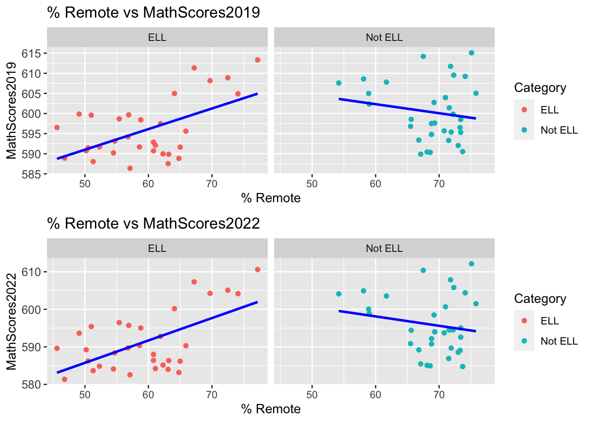
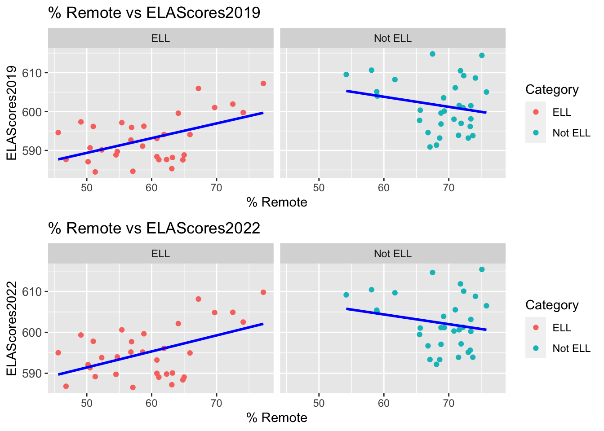
4.6.3 Race/Ethnicity Remote Learning Preferences vs. Scores
We observe a slightly positive correlation between the percentage of remote learning preference and test scores within the Asian group. The stronger the preference for remote learning, the higher the score. There is also a negative correlation between the percentage of remote learning preference and test scores within the White group. However, similar to the ELL group, we do not observe any noticeable change in the distribution of test scores and remote learning preferences from 2019 to 2022 within each race or ethnicity.
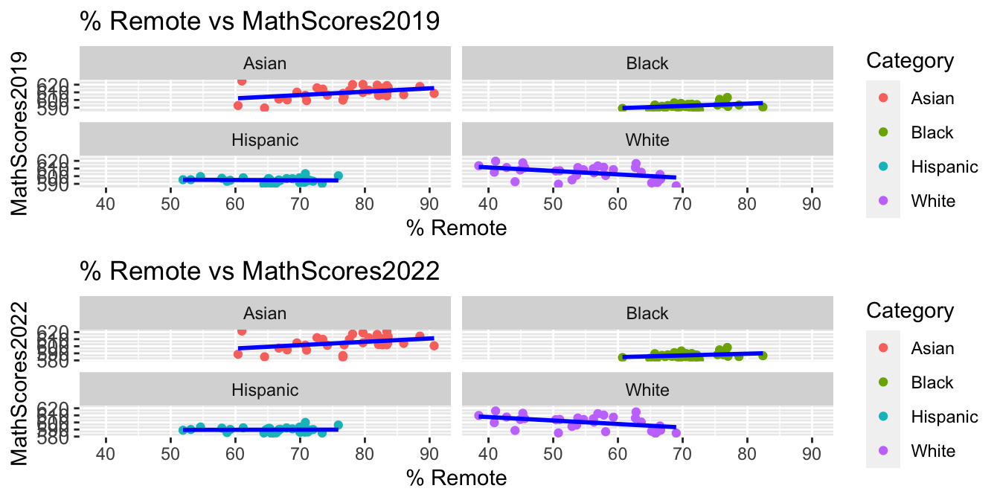
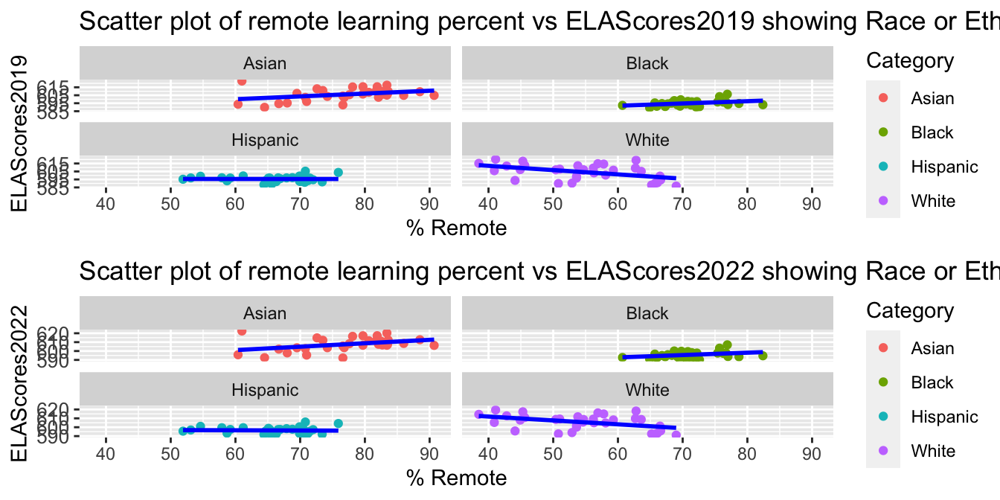